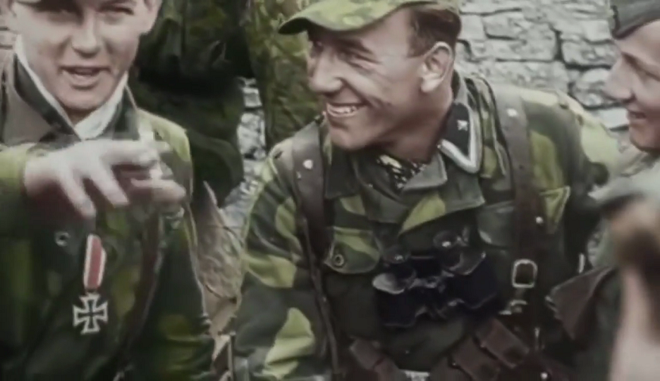
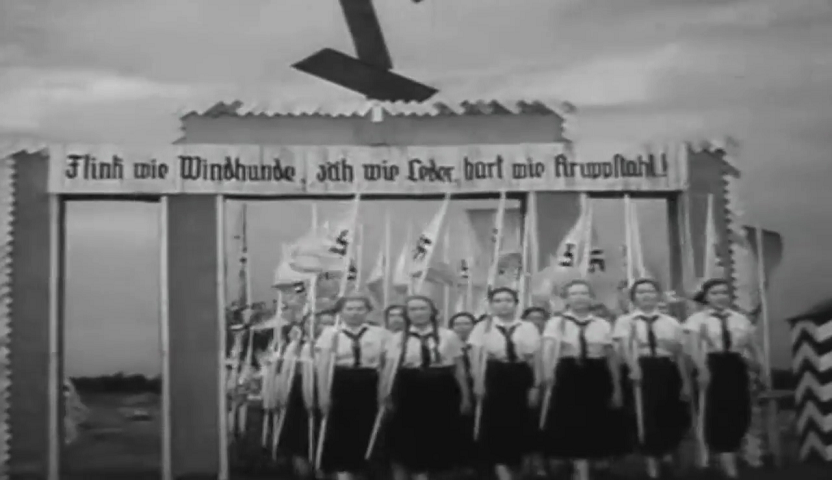
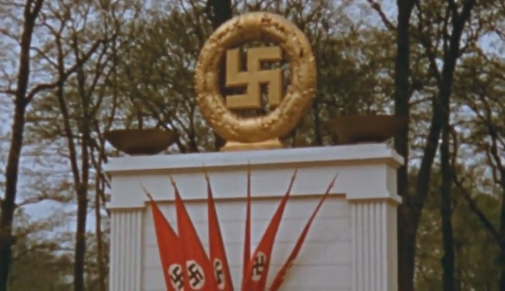
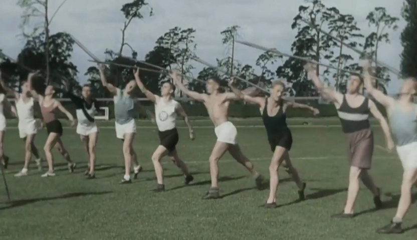

Filmaciones del Tercer Reich (HD)
Alemania en color (1936-1945)

Juventudes hitlerianas en color

La juventud alemana
Alemania 1938 en color
Adolf Hitler en color
La juventud alemana en color
Adolf Hitler en color
Alemania 1939 en color

La Alemania Nacional Socialista en color

Olympic Games of Berlin 1936

")
")
")